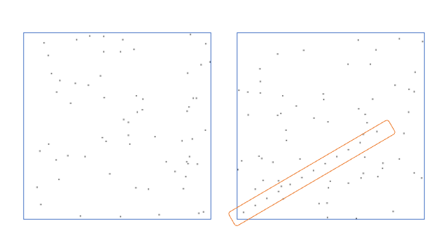

<!DOCTYPE html>
<html>
  <head>
    <title>Experiment</title>
    <script src="../jspsych/dist/jspsych.js"></script>
    <script src="../jspsych/dist/plugin-html-button-response.js"></script>
    <script src="../jspsych/dist/plugin-visual-search-circle.js"></script>
    <script src="../jspsych/dist/plugin-canvas-button-response.js"></script>
    <script src="../jspsych/dist/plugin-instructions.js"></script>
    <script src="../jspsych/dist/plugin-preload.js"></script>
    <link rel="stylesheet" href="../jspsych/dist/jspsych.css" type="text/css">
    <style>
      .jspsych-content { max-width: 100%; margin-top: 5em; }
    </style>
  </head>
  <body></body>
  <script>

    const FIELD_W = 400;
    const FIELD_H = 400;
    const LINE_W = 250;
    const LINE_H = 150;
    const GAP = 10;
    var lx1, lx2, ly1, ly2;

    var jsPsych = initJsPsych({
      on_finish: function () {
        //jsPsych.data.displayData();
      },
      default_iti: 0,
      //show_progress_bar: true,
    });

    var instructions = {
        type: jsPsychInstructions,
        pages: [
        'Welcome to the experiment. Today, we will measure your ability to detect a regularity in a random field of dots.<br>' +
        'The experiment takes about 10 minutes and consists of 60 simple trials.<br>' +
        '<br>' + 
        'In each trial, you will see a random field of dots.<br>' + 
        "In some trials, there are 10 regularly spaced dots forming a line (like in the image on right); <br>and in some there is no such line (like on left).<br>" + 
        "Your task is to decide if the line is <b>absent</b> or <b>present</b>.<br>" + 
        
        'Click <b>Next</b> to start.<br><br>'
        ],
        show_clickable_nav: true
    }
    // https://stackoverflow.com/questions/7342957/how-do-you-round-to-1-decimal-place-in-javascript
    function roundx(value, precision) {
        var multiplier = Math.pow(10, precision || 0);
        return Math.round(value * multiplier) / multiplier;
    }

    https://stackoverflow.com/questions/5642383/copy-imagedata-by-value-in-javascript
    function copyImageData(context, original) {
      var rv = context.createImageData(original.width, original.height);
      // would 
      //   rv.data = Array.prototype.slice.call(original.data, 0);
      // work?
      for (var i = 0; i < original.data.length; ++i)
        rv.data[i] = original.data[i];
      return rv;
    }

    function qnorm20(value) {
        const q = [     -3, // 0 of 20
         -1.6448536, -1.2815516, -1.0364334, -0.8416212, -0.6744898, // 1-5
         -0.5244005, -0.3853205, -0.2533471, -0.1256613,  0.0000000, // 6-10
         0.1256613,  0.2533471,  0.3853205,  0.5244005,  0.6744898,  // 11-15
         0.8416212,  1.0364334,  1.2815516,  1.6448536, 3];          // 16-20
        return q[value];
    }
    function qnorm10(value) {
        const q = [     -3, // 0 of 10
        -1.2815516, -0.8416212, -0.5244005, -0.2533471,  0.0000000,
          0.2533471,  0.5244005,  0.8416212,  1.2815516, 3];
        return q[value];
    }

    function random_dots(c, line_present, n_dots, ori) {
      var ctx = c.getContext("2d");
      // Randomising pixels
      var imageData = ctx.createImageData(FIELD_W, FIELD_H);
      var pixels = imageData.data;
      var numPixels = imageData.width*imageData.height;
      
      function draw_dot(xx, yy) {
        let ix = (yy * FIELD_W + xx) * 4;
        let i2 = ix + 4;
        let i3 = ix + (4 * FIELD_W);
        let i4 = ix + (4 * FIELD_W) + 4;
        pixels[ix + 0] = 0; pixels[ix + 1] = 0; pixels[ix + 2] = 0; pixels[ix + 3] = 255; 
        pixels[i2 + 0] = 0; pixels[i2 + 1] = 0; pixels[i2 + 2] = 0; pixels[i2 + 3] = 255; 
        pixels[i3 + 0] = 0; pixels[i3 + 1] = 0; pixels[i3 + 2] = 0; pixels[i3 + 3] = 255; 
        pixels[i4 + 0] = 0; pixels[i4 + 1] = 0; pixels[i4 + 2] = 0; pixels[i4 + 3] = 255; 
      }
      function draw_dotted_line(x1, y1, x2, y2, nd) {
        for (let i = 0; i <= nd; i++) {
          let x = Math.floor(x1 + (x2 - x1) / nd * i);
          let y = Math.floor(y1 + (y2 - y1) / nd * i);
          draw_dot(x, y);
        }
      }
      // Access and change pixel values
      for (var i = 0; i < n_dots; i++) {
        let x = Math.floor(Math.random()*FIELD_W);
        let y = Math.floor(Math.random()*FIELD_H);
        draw_dot(x, y);
      }
      if (line_present) {
        lx1 = Math.floor(Math.random() * (FIELD_W - 2*GAP - LINE_W) + GAP);
        lx2 = lx1 + LINE_W;
        ly1 = Math.floor(Math.random() * (FIELD_H - 2*GAP - LINE_H) + GAP);
        ly2 = ly1 + LINE_H;
        if (ori == 1) {
          draw_dotted_line(lx1, ly1, lx2, ly2, 10);
        } else {
          draw_dotted_line(lx1, ly2, lx2, ly1, 10);
        }
      } else {
        lx1 = 0; lx2 = 0; ly1 = 0; ly2 = 0;
      }
      
      // Draw image data to the canvas
      ctx.putImageData(imageData, 0, 0);
    }
    function detection_dots(c, line_present, n_dots, ori) {
      jsPsych.randomization.setSeed(jsPsych.getProgress().current_trial_global);
      random_dots(c, line_present, n_dots, ori);
    }
    function feedback_dots(c, line_present, n_dots, ori) {
      jsPsych.randomization.setSeed(jsPsych.getProgress().current_trial_global - 1);
      random_dots(c, line_present, n_dots, ori);
      if (line_present) {
        var lastTrial = jsPsych.data.get().last(1).values()[0];
        var ctx = c.getContext("2d");
        ctx.strokeStyle = (lastTrial.correct) ? "green" : "red";
        if (ori == 1) {
          ctx.beginPath(); ctx.moveTo(lx1, ly1); ctx.lineTo(lx2, ly2); ctx.stroke();
        } else {
          ctx.beginPath(); ctx.moveTo(lx1, ly2); ctx.lineTo(lx2, ly1); ctx.stroke();
        }
      }
    }

    var detection_trial = {
      timeline:
      [{
        type: jsPsychCanvasButtonResponse,
        stimulus: function(c) { 
          detection_dots(c, jsPsych.timelineVariable('present'), jsPsych.timelineVariable('n_dots'), jsPsych.timelineVariable('ori')) 
        },
        canvas_size: [FIELD_H, FIELD_W],
        choices: ['Line absent', 'Line present'],
        prompt: '<p>Is a line present in the dot cloud?</p>',
        on_finish: function(data) {
                if ((data.response === 1) == (data.present)) {
                    data.correct = true;
                } else {
                    data.correct = false;
                }
            },
        data: { 
          present: jsPsych.timelineVariable('present'), 
          n_dots: jsPsych.timelineVariable('n_dots'),
          ori: jsPsych.timelineVariable('ori'),
          task: "response",
        },
      },
      {
        type: jsPsychCanvasButtonResponse,
        stimulus: function(c) { 
          feedback_dots(c, jsPsych.timelineVariable('present'), jsPsych.timelineVariable('n_dots'),jsPsych.timelineVariable('ori')) 
        },
        canvas_size: [FIELD_H, FIELD_W],
        choices: ['Next'],
        prompt: function(){
          var lastTrial = jsPsych.data.get().last(1).values()[0];
          var msg, col;
          if (lastTrial.correct) {
            msg = "Correct"; col = "green";
          } else {
            msg = "Wrong"; col = "red";
          }
          return `<p style="color:${col};">${msg}<p>`
        },
      }],
      timeline_variables: [
        { present: true, n_dots: 64, ori: 1, },
        { present: true, n_dots: 64, ori: 2, },
        { present: false, n_dots: 64, ori: 1, },
        { present: false, n_dots: 64, ori: 2, },

        { present: true, n_dots: 144, ori: 1, },
        { present: true, n_dots: 144, ori: 2, },
        { present: false, n_dots: 144, ori: 1, }, 
        { present: false, n_dots: 144, ori: 2, }, 

        { present: true, n_dots: 256, ori: 1, },
        { present: true, n_dots: 256, ori: 2, },
        { present: false, n_dots: 256, ori: 1, }, 
        { present: false, n_dots: 256, ori: 2, },  
      ],
      sample: {
            type: 'fixed-repetitions',
            size: 5,
      },
    }

    function calculate_accuracy(trial_array) {
      var present_trials = trial_array.filter({present: true});
      var absent_trials = trial_array.filter({present: false});

      var hit = present_trials.select('correct').mean();
      var fa = 1 - absent_trials.select('correct').mean();
      var cr = absent_trials.select('correct').mean();
      var miss = 1 - present_trials.select('correct').mean();

      var hits = present_trials.select('correct').sum();
      var fas = absent_trials.count() - absent_trials.select('correct').sum();
      // dprime <- qnorm(hit_rate_adjusted) - qnorm(fa_rate_adjusted)
      // c <- -(qnorm(hit_rate_adjusted) + qnorm(fa_rate_adjusted))/2
      var dprime = qnorm10(hits) - qnorm10(fas);
      var crit = -(qnorm10(hits) + qnorm10(fas))/2;
      var msg = `<td>${roundx(hit, 3)}</td><td>${roundx(fa, 3)}</td>` + 
        `<td>${roundx(miss, 3)}</td><td>${roundx(cr, 3)}</td>` + 
        `<td>${roundx(dprime, 3)}</td><td>${roundx(crit, 3)}</td>`;

      return { hit: hit, fa: fa, cr: cr, miss:miss, hits: hits, fas: fas, dprime: dprime, crit: crit, msg: msg, }
    }
    /* define debrief */
    var debriefing = {
      type: jsPsychHtmlButtonResponse,
      choices: ['END'],
      stimulus: function() {
        var trials64 = jsPsych.data.get().filter({task: 'response', n_dots: 64, });
        var accu64 = calculate_accuracy(trials64);
        var trials144 = jsPsych.data.get().filter({task: 'response', n_dots: 144, });
        var accu144 = calculate_accuracy(trials144);
        var trials256 = jsPsych.data.get().filter({task: 'response', n_dots: 256, });
        var accu256 = calculate_accuracy(trials256);
        var th = `<table><tr><th>Dots number</th><th>Hits</th><th>FA</th><th>Miss</th><th>CR</th><th>d'</th><th>c</th></tr>`;
        var tf = `</table>`;
        return `<p><b>Results</b></p>` + th + `<tr><td>64</td>${accu64.msg}</tr><tr><td>144</td>${accu144.msg}</tr><tr><td>256</td>${accu256.msg}</tr>` + tf + 
        `<br><p>Press any key to complete the experiment. Thank you!</p>`;
      }
    };

    jsPsych.run([
        instructions,  
        detection_trial,
        debriefing,
    ]);

  </script>
</html>